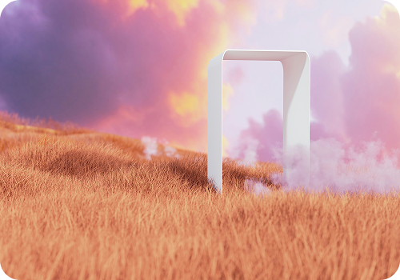
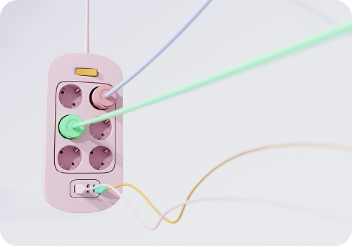

Første skridt
Første skridt
Hvordan begynder man at bede om hjælp?
Du behøver ikke kunne forklare det hele. Du kan begynde med en enkel sætning som: “Jeg har haft det svært på det sidste”, “Jeg ved ikke helt, hvad der er galt” eller “Kan du lytte lidt?”
Vælg gerne et tidspunkt, hvor I ikke har travlt. Hvis det er svært at sige højt, kan du skrive en besked eller vise denne side til en voksen.
Hvis den første person ikke forstår dig, må du gerne prøve en anden. Bliv ved med at fortælle det, indtil nogen hjælper dig videre.

Hvem kan hjælpe?
Du kan række ud til flere forskellige voksne
Det kan være en forælder eller en anden voksen i familien, en lærer, klasselærer, pædagog, sundhedsplejerske, træner eller din egen læge.
Hvis noget i skolen gør det svært at trives, kan du tale med en lærer eller skolens ressourcepersoner. Skolen kan også hjælpe med at finde ud af, om PPR eller andre fagpersoner skal inddrages.
Du kan kontakte
BørneTelefonen
gratis og anonymt. Ring
116 111
, eller brug chat og SMS på deres hjemmeside.
Hvis du er mellem 13 og 18 år, kan du også finde viden og redskaber hos
Mindhelper
. Mindhelper er et tilbud til unge fra 13 år og opefter. Det erstatter ikke personlig hjælp, hvis du har brug for en voksen eller fagperson.

Når det haster
Du skal ikke stå alene i en akut situation
Hvis du eller en anden er i umiddelbar fare, så få fat i en voksen med det samme. Ring 112 ved akut fare eller behov for akut hjælp.
Hvis du har tanker om at skade dig selv, eller ikke føler dig sikker, så fortæl det til en voksen nu. Bliv gerne sammen med en person, du stoler på, mens I finder hjælp.
Gå til kontakt →
Det er ikke at overreagere at bede om hjælp. Det er vigtigt, at nogen ved, hvordan du har det.